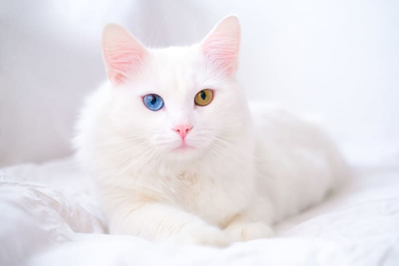
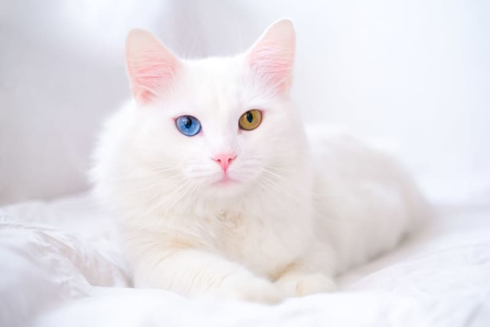

Cats Gallery
 

British shorthair
The British Shorthair is a sturdy and calm cat breed, known for its round face, large eyes, and plush, dense coat. Often seen in a classic "blue" (gray) color, it’s a favorite among cat lovers for its gentle and undemanding nature.
Maine coon
The Maine Coon is one of the largest domestic cat breeds, admired for its majestic appearance and sociable personality. With long, thick fur and a bushy tail, it’s friendly, intelligent, and often enjoys water play!
Turkish angora
The Turkish Angora is a sleek and elegant cat, famous for its silky coat and striking eye colors. Agile and energetic, it loves attention and often follows its owner like a curious shadow.
| Breed | Color | Female Mass | Male Mass | Maximum Length |
|---|---|---|---|---|
| British shorthair | Brown | 3-5 kg | 4-8 kg | 56-64 cm |
| Maine coon | Gray | 5-7 kg | 8-10 kg | 100 cm |
| Turkish angora | White | 2-3 kg | 3-4 kg | 34-40 cm |